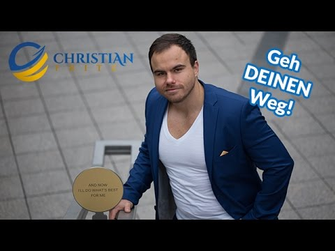

Finanzielle Unabhängigkeit mit Aktien - 7 Tipps
 Toggle navigation Deutsch English Das ist Michael Proffe Trendfolge Proffes Trendfolge System ® Trendfolge-Aktien Trendfolge-Indikatoren Trendfolge-Charts Produkte Börsendienste Veranstaltungen Optionsschein- und K.O. Pakete Kostenloser E-Mail Newsletter Videos Weitere Produkte Ihr Einstieg Ihre Einstiegsseite Finanzielle Unabhängigkeit Optionsscheine erklärt FAQ – häufige Fragen Leserstimmen Blog Über uns Presse Kontakt Kundenlogin Finanzielle UnabhängigkeitIhr Weg in die finanzielle Unabhängigkeit
Michael Proffe zeigt Ihnen, wie Sie Ihre persönliche finanzielle Unabhängigkeit erreichen, und das mit einem Minimum an Risiko. Erfahren Sie, was finanzielle Freiheit bedeutet und wie Sie mit Hilfe von Trendfolge-Aktien langfristig finanziell unabhängig werden.Auf dieser Seite erfahren Sie:
Was bedeutet finanzielle Unabhängigkeit? Wie werde ich finanziell unabhängig? Finanzielle Unabhängigkeit mit Aktien Finanzielle Unabhängigkeit im Alter 7 Tipps für Ihre finanzielle UnabhängigkeitMal ganz ehrlich: Wer von uns hat noch nie davon geträumt, finanziell unabhängig zu sein? Da wird es wohl nur sehr wenige geben, die bei dieser Frage die Hand heben. Aber es ist ja auch wirklich ein sehr angenehmer Wunschtraum. Aber muss es wirklich ein Traum bleiben?
Ich glaube daran, dass jeder in der Lage ist, sich diesen Traum zu erfüllen – und ich zeige Ihnen hier Ihren persönlichen Weg in die finanzielle Unabhängigkeit.
Was bedeutet finanzielle Unabhängigkeit?
Ab wann ist man finanziell unabhängig? Das ist eine wichtige Frage, die wir zunächst einmal beantworten sollten. Die einfachste Antwort ist sicher: Ich kann mir alles leisten, was ich will. Ein schickes Auto, und gleich noch ein zweites dazu für die Ehefrau. Exklusive Ferienreisen, wie zum Beispiel Ski-Urlaub in St. Moritz, die Karibik-Kreuzfahrt oder die Studienreise nach Japan. Ein komfortables Haus im Grünen. Mit anderen Worten:
Wenn Sie finanziell unabhängig sind, können Sie sich all Ihre Träume erfüllen.
Aber es gibt noch einen anderen Aspekt, der vielleicht noch viel wichtiger ist: Die Sicherheit. Klar, Luxus ist etwas Feines, aber eigentlich geht es uns allen doch hauptsächlich darum, dass wir mindestens den Lebensstandard, den wir uns erarbeitet haben, dauerhaft erhalten können. Niemand, der sein Leben lang hart gearbeitet hat, möchte im Alter zurückstecken, weil er vom Staat nur eine kleine Rente erhält. Und auch die medizinische Versorgung wird immer wichtiger: Wir werden alle immer älter, was eine gute Nachricht ist. Aber was nützt uns das hohe Alter, wenn wir finanziell nicht in der Lage sind, unsere Gesundheit zu erhalten?
Wie werde ich finanziell unabhängig?
Viele Menschen spielen jede Woche Lotto und träumen vom Millionen-Jackpot. Andere versuchen am Roulette-Tisch oder am Spielautomaten ihr Glück. Und ein paar wenige werden sogar kriminell. Sie werden mir zustimmen: Alles keine guten Methoden, um reich zu werden: Zu unsicher, zu riskant oder illegal. Was bleiben für realistische Möglichkeiten? Eins steht jedenfalls fest:
Das gute alte Sparbuch ist definitiv keine Option.
Wenn Sie die Minizinsen, die Ihnen die Bank einräumt, mit der Inflationsrate gegenrechnen, verlieren Sie sogar unterm Strich Geld. Die staatliche Rente dürfte auch in den wenigsten Fällen reichen, ein sorgenfreies Leben im Alter zu führen. Sie können diese natürlich mit privaten Renten- und Lebensversicherungen aufstocken, aber auch das sind keine besonders lukrativen Geldanlagen.
Da wäre aber noch eine weitere Möglichkeit: Das Spekulieren an der Börse.
Der eine oder andere von Ihnen wird vielleicht schon beim Wort „Spekulieren“ zusammengezuckt sein – denn das klingt doch schon unheimlich riskant, oder. Und haben wir nicht schon alle genug Geschichten gehört von Hasardeuren, die an der Börse Haus und Hof verzockt haben und die am Ende nicht mehr als die Kleider am eigenen Leib besessen hatten? Stimmt alles – und ist doch nur die halbe Wahrheit!
Finanzielle Unabhängigkeit mit Aktien
Allen Unkenrufen zum Trotz ist das Investieren in Aktien eine sichere und vor allem lukrative Geldanlage und damit der einzige Weg, ohne Risiko den Grundstein für die eigene finanzielle Unabhängigkeit zu legen. Denn mit der Aktie erwerben Sie einen Teil eines Unternehmens. Die Aktie ist damit kein virtuelles Spekulationsobjekt, sondern ein realer Wert.
Aber welche Unternehmen könnten das sein, die für uns als Anlageobjekte interessant sind?
Das herauszufinden, ist eigentlich ganz einfach, Sie müssen nur mit offenen Augen durch die Welt gehen. Es fängt nach dem Aufstehen mit dem Zähneputzen an. Schauen Sie einmal, ob auf Ihrer Zahnpasta-Tube Colgate Palmolive steht. Beim Frühstück geht es z.B. mit dem Müsli weiter. Hier finden Sie auf der Verpackung vielleicht den Hersteller Nestlè. Auf dem Weg zur Arbeit mit dem Auto verdienen die Mineralölkonzerne seit Erfindung des Ottomotors kräftig mit, wie z.B. Exxon Mobile. Damit viele Waren und Güter tagtäglich von A nach B befördert werden können, braucht es Transportunternehmen wie Union Pacific. Ohne die weltweitgroßen Nahrungsmittelkonzerne wie Nestle und General Mills würden unsere Kühlschränke leer aussehen. Um nur einige Beispiele zu nennen.
Das sind Unternehmen, Konzerne, Aktiengesellschaften, die bereits seit Generationen bestehen und viele weitere Generationen begleiten werden.
Wir alle tragen tagtäglich zum Erfolg dieser Unternehmen bei, indem wir deren Produkte kaufen. Aber so gut wie kein Deutscher ist direkt mit einer Aktie an dem Erfolg dieser Unternehmen beteiligt. Dabei ist dies die sicherste Altersvorsorge, die man betreiben kann, und ein möglicher Weg in die finanzielle Unabhängigkeit. Und ganz so nebenbei ist sie auch noch selbstbestimmend, transparent und ehrlich. Wenn Sie zum Beispiel Aktien von Colgate-Palmolive kaufen, dann sind Sie Mitbesitzer dieses Unternehmens. Ein Teil von Colgate-Palmolive gehört tatsächlich Ihnen. Ein zugegebenermaßen sehr kleiner Teil, aber darum geht es nicht. Entscheidend ist etwas ganz anderes: Colgate-Palmolive hat wie jedes andere Unternehmen einen Wert. Wenn dieser Wert steigt, zum Beispiel aufgrund von Zukäufen oder guten Renditen, dann steigt auch der Wert Ihrer Aktie.
Und je mehr Aktien Sie besitzen, desto größer ist der Wertzuwachs.
„Ja aber…“, werden Sie jetzt vielleicht sagen, „was ist denn, wenn der Wert des Unternehmens fällt, dann verliert doch auch meine Aktie an Wert!“. Das ist völlig richtig, und dabei sind wir auch schon beim Kern der Sache: Sie müssen beim Aktienkauf natürlich darauf achten, dass Sie nur Aktien von Unternehmen kaufen, deren Wert sich erhöht, und natürlich sollten Sie die Finger lassen von den Aktien der Unternehmen, deren Wert sinken wird. Leichter gesagt als getan. Aber ich verrate Ihnen heute ein Geheimnis: Sie müssen kein Hellseher sein und brauchen auch keine Kristallkugel, um vorauszusehen, bei welchen Unternehmen Ihr Geld gut und gewinnbringend angelegt ist. Ich zeige Ihnen gerne, wie das geht.
Die Formel für finanzielle Unabhängigkeit
Eigentlich ist es ganz einfach: Es gibt unendlich Unternehmen, die Produkte produzieren, auf die wir nicht mehr verzichten können und wollen. Diese Unternehmen werden weiterhin erfolgreich sein, und wir können uns daran beteiligen. Der Elektronikkonzern Apple ist hier ein gutes Beispiel. Apple produziert qualitativ hochwertige Produkte, die stark nachgefragt werden – Computer, Smartphones oder Tablets. Aber das macht Apple nicht alleine. Viele Unternehmen stehen hinter den Bestsellern aus der Erfolgsschmiede von Apple. Zur Produktion eines iPhones benötigt man Rohstoffe und Chips sowie viele weiter Bestandteile, hinter denen wiederum andere Firmen stehen.
Solche Firmen nennt man Trendfolger.
Und wir sind es, die den Trend entstehen lassen, indem wir tagtäglich auf diese Produkte zurückgreifen. Sie sind Bestandteile unseres täglichen Lebens geworden und diese Produkte werden von uns benötigt. Oder können Sie sich ein Leben ohne Essen, Telefon, Internet oder gar Strom vorstellen? Um solche Unternehmen zu finden, habe ich das Trendfolge-System entwickelt – das ist meine Formel für die finanzielle Unabhängigkeit.
Finanzielle Unabhängigkeit im Alter
Diese Formel funktioniert – ich habe sie nicht nur entwickelt, sondern natürlich auch ausprobiert. Mit dem Trendfolgesystem ist es mir gelungen, in knapp 10 Jahren aus 30.000 € die runde Summe von 1 Million € zu machen. Unglaublich, aber tatsächlich wahr. Mittlerweile steht das Depot bei über 3 Millionen Euro (Stand Juni 2018). Ich habe dazu mit dem Trendfolgesystem die Unternehmen ermittelt, deren Wert dauerhaft steigen wird. Und dann habe ich deren Aktien gekauft. Das reicht aber noch nicht, um die gewünschte finanzielle Unabhängigkeit im Alter zu erreichen. Dazu muss man nämlich noch mit einem Börsen-Instrument die Gewinne der Aktien noch einmal hebeln.
So haben meine Leser den Weg in ihre finanzielle Unabhängigkeit geschafft heute steht das Depot bei über 3 Millionen EuroDann kommt so richtig Spaß in die Angelegenheit!
Stellen Sie sich mal vor, wir begleiten eine Aktie wie die von Apple zusätzlich zum Kauf der Aktie mit einem Instrument, welches den Erfolg der Aktie noch einmal verzehnfacht. Altersvorsorge und Spaß am Sparen zu haben, das geht sehr wohl.
Das Thema Altersvorsorge wird ja seit einiger Zeit in vielen Publikationen und Medien besprochen und leider wird in allen Publikationen nicht wirklich eine Perspektive aufgezeigt.
Angst und Unsicherheit sind der Konsens. Es geht aber auch anders. Mit meinem Trendfolgesystem spielt die Angst um Altersarmut sowie den immer wiederkehrenden unterschiedlichsten Krisen für Sie keine Rolle mehr! Ich zeige Ihnen, Schritt für Schritt, wie Sie Ihre persönliche finanzielle Unabhängigkeit erreichen.
Im Folgenden können Sie mehr über das Thema Trendfolge erfahren.
Mit Trendfolge-Aktien können Sie finanzielle Unabhängigkeit erreichen
Das Aktien eine „sichere“ und sehr viel bessere Alternative zum guten alten Sparbuch, der staatlichen Rente oder privaten Altersvorsorgen sind, kommt leider nur den wenigsten Menschen in den Sinn.
Ich zeige Ihnen, wie Sie mit Trendfolge-Aktien ihre persönliche finanzielle Freiheit erreichen.
Melden Sie sich jetzt für den kostenlosen E-Mail Newsletter „Proffe News“ an und erfahren Sie, wie Sie finanzielle Unabhängigkeit erreichen.
7 Tipps für Ihre finanzielle Unabhängigkeit
Wie werde ich finanziell unabhängig? – Wenn Sie sich auch schon des Öfteren diese Frage gestellt haben, dann sind Sie hier genau am richtigen Ort gelandet. Schon seit vielen Jahren helfe ich Menschen wie Ihnen, finanzielle Unabhängigkeit zu erlangen. Das ist allein mit harter Arbeit heutzutage kaum noch möglich. Aber Sie können die Früchte Ihrer Arbeit gewinnbringend investieren und so ein Vermögen anhäufen, mit dem Sie tatsächlich finanziell unabhängig sind. Mein Rat: Beherzigen Sie meine 7 besten Tipps, um finanziell unabhängig zu werden.
1. Vergessen Sie das Sparbuch
Früher galt das Sparbuch als verlässliche und solide Methode, sein Geld anzulegen. Klar konnte man da keine sensationellen Renditen erwarten, aber das Geld war sicher und ohne Risiko angelegt; und über die Zeit kam mit Zinsen und Zinseszinsen doch ein ansehnliches Sümmchen zusammen. Diese Zeiten sind vorbei. Die Zinsen sind in unseren Tagen so niedrig, dass der Ertrag auf dem Sparbuch durch die Inflation sofort wieder aufgefressen wird.
2. Fallen Sie nicht auf die Versprechen windiger Berater rein
Seien Sie vorsichtig, wenn man Ihnen das Blaue vom Himmel verspricht: Traumhafte Renditen von 1.000 % und mehr, ganz ohne Risiko und in kürzester Zeit – da sollten bei Ihnen alle Alarmglocken angehen. Prüfen Sie solche Angebote sehr genau. Wer solche Erfolge verspricht, der muss sie auch beweisen können. Fehlt der Beweis, dann lassen Sie besser die Finger davon!
3. Vorsicht bei Hebelprodukten!
Eins vorweg: Hebelprodukte wie Zertifikate oder Optionen sind nicht prinzipiell Teufelszeug. Mit Bedacht eingesetzt, können sie sogar helfen, schneller finanziell unabhängig zu werden. Wichtig dabei ist nur, dass Sie nur einen Teil Ihres Anlagevermögens in diese Hebelprodukte investieren. Und natürlich ist es sinnvoll, Hebelprodukte von den Werten zu erwerben, von denen Sie auch Aktien halten.
4. Gehen Sie mit offenen Augen durch die Welt
Gerade Neueinsteiger auf dem Börsenparkett tun sich schwer mit der Auswahl Ihres ersten Aktienpaketes. Sie studieren stundenlang Charts und Kurse, dabei ist es doch eigentlich ganz einfach: Schauen Sie sich doch einmal um! Welche Firmen stellen die Produkte her, die Sie gerne kaufen? Und kaufen andere Menschen aus Ihrem Umfeld diese Produkte auch gerne? Sind das vielleicht Produkte, die Sie schon Ihr Leben lang begleiten? Die Wahrscheinlichkeit, dass es sich bei den Herstellern dieser Produkte um solide Unternehmen handelt, ist ziemlich hoch – warum dann nicht in diese investieren?
5. Verteilen Sie Ihr Geld auf mehrere Werte
Egal, wie solide ein Unternehmen ist: Es kann immer etwas Außergewöhnliches und nicht Vorhersehbares geschehen, dass zu einer Krise und damit zu einem Absturz der Aktie führt. Deshalb sollten Sie niemals all Ihr Geld auf nur einen Wert konzentrieren. Streuen Sie Ihr Kapital auf 10 verschiedene Unternehmen, im Idealfall noch aus verschiedenen Regionen und Branchen, schließen Sie das Risiko eines Totalverlustes nahezu aus.
6. Bleiben Sie ruhig!
Wenn Sie finanziell unabhängig werden wollen, dann sollten Sie niemals dem vermeintlich schnellen Geld hinterher rennen. Gier ist ein schlechter Berater! Verteilen Sie Ihr Geld auf ein paar ausgewählte Aktien und schauen Sie Ihrem Vermögen in aller Ruhe beim Wachsen zu. Bleiben Sie vor allem ruhig, wenn der Kurs einer Ihrer Aktien mal nach unten geht. Das kommt bei den besten Unternehmen vor. Wenn es sich dabei aber um einen echten „Trendfolger“ handelt, dann wird er diese Krise überstehen und sogar gestärkt daraus hervorgehen!
7. Gönnen Sie sich auch mal was!
Der Weg in die finanzielle Unabhängigkeit soll auch Spaß machen! Sie müssen nicht jeden Cent wieder reinvestieren. Wenn Sie zum Beispiel ein paar Tausend Euro Gewinn mit einem schönen Hebelprodukt gemacht haben (und das wird häufiger passieren, wenn Sie mit der Trendfolge-Strategie arbeiten!), dann nehmen Sie doch die Hälfte davon heraus und gönnen sich was Schönes – einen Kurzurlaub, ein Besuch im Sterne-Restaurant, ein schönes Geschenk für Ihre Frau. Das Leben ist viel zu kurz, um es nicht zu genießen!
Worauf warten Sie noch? Werden Sie jetzt finanziell unabhängig und lassen Sie Michael Proffes Trendfolge-Strategie für sich arbeiten! Das ist Michael Proffe Trendfolge Produkte Ihr Einstieg Leserstimmen Blog Über uns Kundenlogin Datenschutz Disclosure AGB Impressum © Copyright 2020 Michael Proffe. All rights reserved.